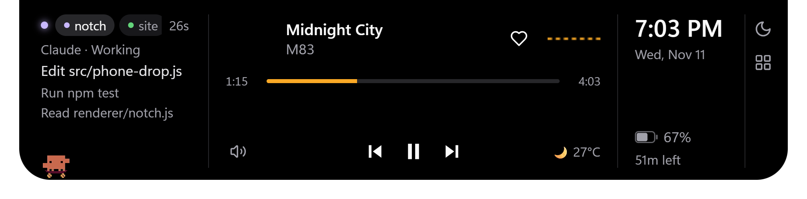

See it in 34 seconds.
Everything in one glance.
Phones and Macs keep live status in one place at the top of the screen. Windows spreads it across the taskbar, the tray, a corner of banners and hidden terminal windows. Islet pulls it into one pill, and lets you act on it there.

Music
- Spotify, or any player using Windows media controls
- Album art, with the accent colour taken from it
- Play, skip, seek, scroll for volume, like the song
- A live wave drawn from the player's own audio
- Timed lyrics and an enlarged album view
Claude Code and Codex
- Sessions from both agents in one column
- Each shows working, needs you or done
- The last 3 actions: tools, edited files, replies
- Allow or Deny Claude Code requests from the notch
Notifications
- Windows toasts become notch pop-ups with real app logos
- The full message, up to about 7 lines
- Windows' own banners come back on the lock screen
- Do Not Disturb, with an optional daily schedule
Battery and system
- A black hole plays when the charger goes in or out
- A green edge glow while charging
- A one-time low-battery warning
- Mic, camera and screen-capture dots
- Hides behind fullscreen apps
Info
- Weather by city, with no API key
- Your next event from a private calendar link
- Browser download progress
- A timer, started from the tray
Tools
- Clipboard history: last 5 texts, in memory only
- File shelf: drop files in, drag them out
- Ctrl+Alt+N cycles pill, open and hidden
- Ctrl+Alt+M moves Islet to the next monitor
Stays on your PC.
No account, no cloud and no tracking. Islet only goes online to check GitHub for updates and for the extras you use: lyrics from lrclib.net, weather from Open-Meteo, your calendar link, and Spotify if you connect it.
Out of the way
Clicks pass through everywhere except the notch. When nothing is happening, it shrinks to one dot.
Private by design
Clipboard history never touches disk, the shelf stores file paths only, and the agent hook server listens on 127.0.0.1 only.
Your settings
Twenty settings cover size, accent colour, animations, notifications and more.
What to expect at launch.
- Launch
- Nov 3, 5 PM IST
- Version
- 2.1
- Runs on
- Windows 10 1903+ and 11
- Licence
- MIT
- Made by
- Gopinath